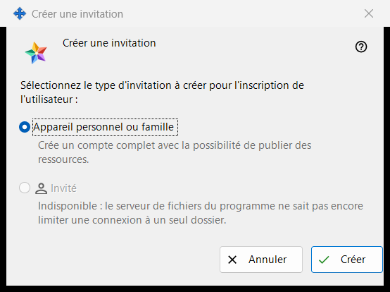
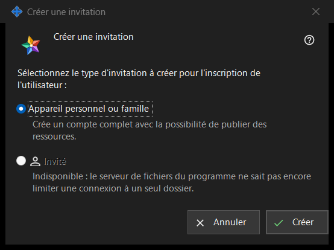

Créer une invitation
Objectif
Cette petite fenêtre demande quel type de compte la nouvelle invitation va créer. Elle s'ouvre avec «Créer une invitation..» dans le groupe «Invitations» des paramètres du serveur d'échange ; le groupe s'affiche dès que le gestionnaire atteint le serveur.


Dans cet ordre
- Dans les paramètres du serveur d'échange, repérez le groupe «Invitations» et cliquez sur «Créer une invitation..».
- Laissez «Appareil personnel ou famille» sélectionné.
- Cliquez sur «Créer».
- La fenêtre «Invitation créée» s'ouvre et affiche le code une seule fois : copiez-le là. «Annuler» ou Esc ferme la fenêtre sans rien créer.
Les éléments
Type d'invitation
La question «Sélectionnez le type d'invitation à créer pour l'inscription de l'utilisateur :» propose deux boutons radio. «Appareil personnel ou famille» est sélectionné par défaut, et la ligne en dessous indique «Crée un compte complet avec la possibilité de publier des ressources.» La personne qui utilise l'invitation enregistre un identifiant et un mot de passe qui lui sont propres.
Créer
«Créer» demande au serveur une invitation à usage unique. En cas de succès, la ligne «Invitation créée avec succès.» apparaît sur la page des paramètres et la fenêtre avec le code s'ouvre. Si le serveur refuse, la raison apparaît sur la page et la fenêtre du code ne s'ouvre pas. La liste présente chaque invitation par son type, son heure de création, son état et un hachage, jamais par son code.
Retirer une invitation
Pour annuler une invitation déjà créée, sélectionnez-la dans la liste et cliquez sur «Retirer l'invitation». Après votre confirmation, son code cesse de fonctionner.
Annuler
«Annuler» ou Esc ferme la fenêtre sans rien créer.
Paramètres du gestionnaire · Paramètres de partage SFTP · Paramètres du serveur d’échange